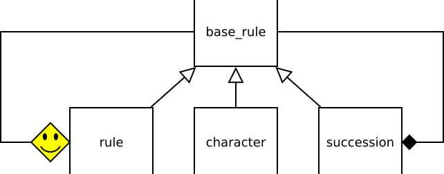

Nyelvi elemzők
Nagy Gergely · 2019.03.19.
Nyelvi elemzők írása és egy nyelvi elemző keretrendszer
A programozás során nagyon gyakran kell formális szöveges tartalmat feldolgoznunk: egy cím bekérésétől kezdve, egy algebrai kifejezés kiértékelésén át egy adott program nyelven írt kód értelmezéséig. A feladat ezekben az esetekben mind azonos:
- Meg kell vizsgálni, hogy egy adott szabályrendszernek megfelel-e a szöveg.
- Ha igen, akkor könnyen kezelhető, a szöveg logikáját tükröző adatszerkezetet kell építeni.
- Ha nem, akkor jól használható hibaüzenetet kell előállítani, ami segít az elírás megtalálásában.
Bár a manapság használt programnyelvekhez mindig tartozik egy jelentős méretű könyvtár, ami a feladatok nagyon széles köréhez nyújt segítséget a programozóknak, a nyelvi elemzés könyvtárszinten csak nagyon kevés nyelvben támogatott (pl. Python pyparse).
Ugyanakkor szabadon letölthető eszközök léteznek erre a célra. A legtöbb ilyen program úgy működik, hogy egy bemeneti fájlban le kell írni a megfeleltető szabályrendszert (nyelvtant) és az sikeres illeszkedés esetén végrehajtandó kódrészleteket is. Ezekből generál egy adott programnyelvű kódot, ami tartalmazza az elemzőt. Így működik például a yacc, a lex, a Flex, a Bison.
A probléma ezekkel a programokkal az, hogy a bemenetük egy kevert nyelvű, nehezen áttekinthető fájl, a kimenetük pedig egy olyan program, ami generált, tehát szintén nehezen áttekinthető, ugyanakkor be kell illesztenünk a saját projektünkbe. Egész biztos, hogy nem lesz megegyező a kódolási, elnevezési stílus, ami megnehezíti a fenntartást és a hibakeresést.
Létezik olyan elemző-könyvtár is, amiben a nyelvtant azon a programnyelven adhatjuk meg, amiben a program többi részét is írjuk. Nincsen generált kód és az elemző teljes egészében szervesen illeszkedik a projektünkbe. Ilyen pl. a Boost csomag Spirit könyvtára illetve a pyparse is.
A Spiritet sablon metaprogramozási eszközökkel írták meg, ma egy olyan elemző könyvtár alapjait nézzük át, ami egy osztályhierarchiára építkezik és kihasználja a C++11 új nyelvi és könyvtári elemeit.
Programozás alapjai I-ben már találkoztunk az EBNF-fel, ami egy formális módja nyelvtanok leírásának. Gyorsan elevenítsük fel az EBNF jelölésrendszerét a nyelvtanok örök "helló világjával", az alapműveleteket tartalmazó algebrai kifejezésekkel:
kifejezés ::= összeg
összeg ::= szorzat (('+' | '-') szorzat)*
szorzat ::= tényező (('*' | '/') tényező)*
tényező ::= szám | zárójeles
zárójeles ::= '(' kifejezés ')'
Egy nyelvtannak mindig van egy kiinduló szabálya, amelynek a teljes elemzendő szöveget le kell írnia. Ez a
szabály itt a kifejezés. Ez azt jelenti, hogy amikor egy szöveget megkapunk és megpróbáljuk
megállapítani, hogy az egy helyes algebrai kifejezés-e a fenti nyelvtan alapján, akkor azt a kérdést tesszük
fel, hogy az szöveg megfelel-e a kifejezés szabálynak. Természetesen innen kiindulva, a szabály egyes
elemeit vizsgálva eljutunk az elemzés során az összes többi szabályhoz is.
Nézzünk egy példát! Vizsgáljuk meg az alábbi kifejezést:
4 * ( 3 + 8 )
4 * ( 3 + 8 ) ^
A fenti kifejezésre tehát teljesülnie kell, hogy ő egy kifejezés. Ez azt jelenti, hogy ő egy
összeg. Egy összeg egy szorzattal kezdődik, ami egy tényezővel, ami lehet
egy szám vagy egy zárójeles (kifejezés). Nézzük először a számot. A '4' pont egy
szám. Ez a szabály itt nincs kifejtve, de tegyük fel, hogy ez egy alaptípusa az elemzőnknek, amire
támaszkodhatunk, illetve akár könnyedén le is írhatnánk EBNF-ben, de itt most ezzel már nem növeljük a
nyelvtanunkat.
Tehát a '4'-es karaktert sikerült felismernünk és ott tartunk, hogy a szám szabály teljesült a
szövegünk elejére. Ekkor továbbléphetünk a következő elemre, ami itt a következő karaktert jelenti. A
szabályaink hívási láncában ilyenkor visszalépünk egyet: ott tartottunk, hogy a szorzat szabályt
próbáltuk illeszteni a szövegre és ennek kezdeteként a tényező szabálynak kellett teljesülnie. Ez
megtörtént, tehát továbbmehetünk.
4 * ( 3 + 8 ) ↑
A szorzat szabályban ezután egy opcionális rész következik. Tehát, ha a szabály ezutáni részei nem
teljesülnének a szövegünkre, a szorzat már akkor is illeszkedett volna. Ez történik például olyankor,
ha a kifejezésünk egyetlen számjegyből áll. Itt azonban további karaktereink is vannak. Az opcionális rész
első eleme egy VAGY-kapcsolat: egy '*' vagy egy '/' kell, hogy következzen. Ebből a '*' teljesül, tehát
továbbléphetünk.
A műveleti jel után ismét egy tényező következik és mivel a soronkövetkező karakter nem
szám, ezért a zárójeles kifejezés illesztésével megyünk tovább:
tényező ::= szám | zárójeles
4 * ( 3 + 8 )
↑
A zárójeles szabály egy zárójelpár között egy kifejezést vár. Itt látható az, hogy a nyelvtanunk
rekurzív: egy kifejezés, ami a kiinduló szabályunk, további kifejezéseket tartalmazhat. Emiatt lehetnek
az algebrai kifejezéseink tetszőlegesen bonyolultak, így tudjuk leírni a végtelen egymásba ágyazhatóságot. Természetesen a végtelen
itt lehetőséget jelent, egy tényleges kifejezésnél az egymásbaágyazott elemeknek egyszer a végére jutunk és hívási láncunk is
visszajut a kezdeti szabályhoz, és ezzel befejeződik az elemzés.
Ott tartunk tehát, hogy felismerjük, hogy a szorzat második tényezője egy zárójeles
kifejezés, hiszen egy nyitó zárójellel kezdődik. Ezután visszaugrunk a kifejezés szabályra és a
további karaktereket eszerint próbáljuk meg elemezni.
zárójeles ::= '(' kifejezés ')'
4 * ( 3 + 8 )
↑
A soronkövetkező karakternek tehát egy összegnek kell lennie, ami a szorzat szabályt kell,
hogy kielégítse, ami vagy egy szám vagy egy zárójeles kifejezés. A soronkövetkező elem a
'3', ami egy szám, tehát egy tényező. Most a szorzat szabály illesztése folytatódik, ami
szerint egy '*'-nak vagy egy '/'-nek kéne következnie. Csakhogy nem ez a helyzet. Ugyanakkor, ahogy
említettük, a szorzat szabálynak ez a része opcionális, tehát ennek nem teljesülése esetén is
illeszkedik a szabály.
4 * ( 3 + 8 )
↑
Ez azt jelenti tehát, hogy a '3'-ra teljesül, hogy ő egy szorzat (egy egytényezős szorzat) és így
visszajutunk az összeg szabályhoz. A '+' karakter teljesíteni fogja a szabály következő előírását,
majd következik egy újabb számjegy, aminél megint azt kapjuk, hogy ő egy egytényezős szorzat.
4 * ( 3 + 8 )
↑
Ezzel teljesült a második kifejezés szabályunk, ami a zárójelesből indult, és mivel a
kifejezésünk utolsó karaktere egy ')', ezért a zárójeles is sikeresen illeszkedett. Ez azt jelenti,
hogy a kezdeti kifejezés vizsgálatunk sikeresen zárult, hiszen a kifejezésről bebizonyítottuk, hogy ő
egy olyan összeg, ami egy szorzat, amelynek első tényezője egy szám, a
második pedig egy zárójeles kifejezés, ami egy összeg.
Végigelemeztük tehát a kifejezésünket úgy, hogy a szöveg minden egyes elemére feltettük a kérdést, hogy megfelel-e az aktuális szabály soronkövetkező előírásának. Tulajdonképpen felfoghatjuk ezt a folyamatot úgy, hogy egy szabály az egy logikai visszatérési értékű függvény, aminek átadjuk a szöveget az aktuális pozíciótól kezdve és ő megmondja, hogy teljesíti-e a szöveg az általa támasztott elvárásokat és, ha igen, akkor továbblépteti a pozíciót is. Az elemzéshez pedig segítségül hívhat további szabályokat, vagy meghívhat további, azonos aláírású függvényeket.
Ezt az elemző módszert hívják rekurzív alászálló elemzésnek (recursive descent parser). Ez csak egy a számos elemző módszer közül, ám egyszerű megvalósíthatósága és a C illetve C++ nyelvekben való hatékony függvényhívási mechanizmusnak köszönhetően igen népszerű és elterjedt. Az itt bemutatott elemzőkönyvtár is ezen az elven működik.
A tokenek fogalma
Mielőtt továbbhaladnánk, egy apró pontosítást teszünk. A fentiekben vegyesen beszéltünk az elemzendő szöveg soronkövetkező karakteréről és eleméről. A formális nyelvi elemzők nagyon gyakran két részre bontják az elemzési feladatot. Az első az úgynevezett tokenizálás, amelynek során a szöveget karakterszinten elemzik és megpróbálják a nyelv egyes elemeit felismerni. Jelen esetben ilyenek a számok, a műveleti jelek és a zárójelek. Ez a lépés tartalmazza a szóközkarakterek elnyelését is. Siker esetén előáll egy olyan lista, ami már egy absztrakt reprezentációja a szövegnek és a nyelv legalacsonyabb szintű, ún. terminális szimbólumait tartalmazza.
Az elemzésnek az a fázisa, ami azt vizsgálja meg, hogy a szöveg teljesíti a megadott nyelvtant, ezt a listát kapja a bemenetén és már nem megy le karakterszintre. Az alábbiakban bemutatott elemző nem teszi meg ezt szétválasztást és rögtön karakterszinten elkezdi a nyelvtani elemzést. Ennek következménye, hogy a hibaüzenetei is karakterszintűek (bár van lehetőség benne magasabbszintű hibajelzésre is). Ugyanakkor a nyelvtan nem válik szét két részre, egységesen kezelhető.
Mielőtt a keretrendszerrel való ismerkedésbe belefognánk, nézzük meg, hogy miként lehet megvalósítani egy konkrét rekurzív alászálló elemzőt. A keretrendszer segítségével tetszőleges nyelvtanra néhány sorban előállítható egy ilyen elemző, azonban az abban található mechanizmusok megértéséhez látni kell, hogy hogyan lehet "kézzel" megvalósítani egy ilyen elemzőt.
Az elemzést std::string-eken fogjuk végezni, és a pozíció nyilvántartásához a típus konstans
iterátorát használjuk. Mind az elemzendő szöveg, mind az elemzés egy részeként felismert szövegrészlet
azonsítható egy iterátorokkal megadott intervallummal, amit az alábbi típus ír le:
using match_range = std::pair< std::string::const_iterator, std::string::const_iterator >;
Nézzünk meg egy nagyon egyszerű szabályt a kód szintjén! A szabály egy karaktert próbál felismerni. Az általa
elfogadott karakterek halmazát egy std::string-ben adhatjuk meg.
Természetesen a sztring típus nem halmazként viselkedik, elhelyezhetjük benne ugyanazt a karaktert többször is. Az egyszerűség és hatékonyság kedvéért választjuk ezt a megoldást. A karakterismétlés hibás működéshez nem vezet, csupán lassítja az elemzést.
A lenti függvényünk átveszi az elemzendő intervallumot (context), amelynek az eleje a soronkövetkező
karakter, a vége pedig a szöveg vége, továbbá a megengedett karakterek halmazát (values) és egy
karakter-referenciát (result), amelyben elhelyezi a felismert karaktert.
Ez utóbbit azért teszi, mert a kézzel írt elemzőkben általában összekeveredik az elemzési feladat megoldása a szöveg feldolgozásával, tehát jelen esetben például az algebrai kifejezés értékének kiszámításával. Pontosan ez az egyik tényező, ami egy keretrendszer megírását motiválja. A kézzel írt elemzők ugyanis nem újrahasznosíthatóak, még akkor is újra kell őket írni, ha ugyanazt a nyelvtant alkalmazzuk, de máshogyan kell a szöveget feldolgoznunk.
bool character(match_range &context, std::string const &values, char &result) {
if (context.first == context.second) return false;
for (char c : values) {
if (c == *context.first) {
result = c;
++context.first;
return true;
}
}
return false;
}Elemezzük röviden a fenti függvényt! Az első feladat az, hogy megvizsgáljuk, hogy nem értünk-e a szöveg végére. Hibás bemenet esetén előfordulhat, hogy még várunk egy karaktert, de az már nem található a szövegben. Opcionális elemek esetén pedig ez még egy helyes bemenet esetén is megtörténhet. A szöveg vége után olvasni viszont programozási hiba, ezért ezt az esetet mindenképpen le kell kezelni. Természetesen, ha a szöveg végén állunk és egy karaktert kerestünk, akkor ez a szabály illesztésének a sikertelenségét jelenti, tehát ilyenkor HAMIS értékkel kell visszatérnünk.
Ezek után végiglépdelünk a megengedett karakterek halmazán és amennyiben megtaláljuk az aktuális karaktert
(*context.first), akkor három dolgot teszünk:
- az eredményt tároló változóban elhelyezzük a megtalált karaktert,
- az elemzendő intervallum elejét léptetjük, hogy a következő szabály már az új pozíciótól kezdve folytassa az elemzést,
- IGAZ értékkel térünk vissza, hiszen sikeres volt a szabály illesztése.
Amennyiben sikertelen volt a szabály illesztése, akkor HAMIS értékkel térünk vissza. Nagyon fontos, hogy ilyenkor nem szabad elállítani az elemző intervallumot, hiszen előfordulhat, hogy az adott szabály sikertelensége még nem jelenti azt, hogy a bemenetünk hibás. Ugyanakkor a következő függvénynek ilyenkor arról a pozícióról kell folytatnia a vizsgálatot, amin ez a függvény is kezdett. Bonyolultabb szabályokat megvalósító függvényekben ezért az elemzendő intervallumról mindig készítünk egy másolatot és azon dolgozunk. Siker esetén pedig frissítjük az eredeti változó értékét.
Nézzük meg még egy összetett szabálynak a kódját is! Ez a korábban látott EBNF nyelvtanunk
zárójeles szabályát valósítja meg részben az imént látott character szabály
segítségével.
bool brace(match_range &context, int &result) {
match_range local = context;
int tmp;
char c;
if (character(local, "(", c) && expression(local, tmp) && character(local, ")", c)) {
context = local;
result = tmp;
return true;
}
return false;
}Látható, hogy a függvény első dolga, hogy lemásolja az intervallumot, amin dolgozunk. Erre azért van szükség, mert a későbbiekben átadja ezt a másolatot további elemzőfüggvényeknek, amelyek sikeres illesztés esetén megváltoztatják azt. Előfordulható azonban, hogy valahol az elemzés közepén találunk egy hibát. Ekkor lehet, hogy egy elemző függvény már odébb állította a pozíciót. Ilyenkor, ha a közösen használt pozíciót állítanánk el, majd HAMIS értékkel visszatérnénk, akkor az elemző rossz pozícióról próbálkozna tovább és ezzel biztosan hibára ítélné az vizsgálatot.
Figyeljük meg, hogy hogyan valósítja meg a függvény az egymásra következés vizsgálatát! A logikai ÉS kapcsolat, a C nyelv szabályai szerint logikai rövidzárral értékelődik ki. Ez azt jelenti, hogy a kiértékelés kötelezően balról jobbra halad és csak akkor próbáljuk meg kiértékelni a soron következő elemet, ha az aktuális sikeres volt, vagyis IGAZ értékkel tért vissza. Ugyanakkor a sikeresen futó szabályok továbbállítják a kontextust, tehát a második szabály onnan kezdi az elemzést, ahol az első abbahagyta, a harmadik pedig onnan, ahol a második megállt.
Siker esetén kontextust frissítjük a lokális másolat értékével, beállítjuk az eredményt tároló változó értékét és IGAZ-zal térünk vissza, ellenkező esetben pedig egyszerűen HAMIS értéket adunk és a kontextus értékét nem változtatjuk meg.
Azt is figyeljük meg, hogy a brace függvény nem vizsgálta az intervallum határát. Ez azért van
így, mert ő nem karakterszintű, hanem magasabb, ún. nem-terminális szabály. Azért nem szükséges itt
határellenőrzést végezni, mert egészen biztos, hogy az itt meghívott szabályok vagy közvetlenül
karakterszinten dolgoznak (mint a character), vagy önmaguk is magasszintűek és belül ők hívnak
terminális szabályokat (mint az expression). Így tehát valójában megtörténik a szükséges vizsgálat,
csak azt egy karakterszintű szabály végzi el.
Általánosan azt mondhatjuk, hogy az intervallum határainak elemzését csak a karakterszintű szabályokat megvalósító függvényekben kell elvégeznünk.
Az elemző további részeit nem tekintjük át, de még egy megjegyzést szeretnénk tenni a logikai kifejezésekkel kapcsolatban. A logikai VAGY kapcsolat alkalmazható a nyelvtan alternatíváinak vizsgálatára, a logikai rövidzár itt is a segítségünkre van. Ugyanakkor vigyázni kell, hogy vegyes kifejezéseket (ÉS-t és VAGY-ot is tartalmazó kifejezést) ne írjunk, ugyanis ebben az esetben rossz pozícióra kerülhet az elemzés a szabályok sikertelensége esetén. Erről bővebb információ található a Programozás alapjai I. tárgy 14. előadásában.
A teljes elemző kódja letölthető: recursive_descent_parser.cc.
Az elemző keretrendszer megvalósításával az a célunk, hogy a fentiekben megismert elemző kódrészleteket, amelyek egy adott nyelvtan megvalósításánál rengeteg, lényegében azonos kód ismétlődő leírásával járnak, ne nekünk kelljen megírni. Ehelyett egy objektum-orientált keretrendszer osztályaira bízzuk a feladatot.
A keretrendszer természetesen bővíthető, de jelenlegi formájában már annyi beépített szabályt ismer, amivel a legtöbb nyelvtan kényelmesen leírható anélkül, hogy a rendszer belső működését megismerve bővítenünk kéne azt.
Van két további elvárásunk is:
- a nyelvtanok megadása C++-ban történjen egyegyszerűen átlátható módon, ami lehetőleg hasonlít a szabványos leírásokra (pl. EBNF),
- válasszuk külön a szöveg elemzését és a szöveg feldolgozását!
Az előbbit megfelelő C++ operátorok újraértelmezésével fogjuk megoldani. Az utóbbi elvárás tulajdonképpen természetszerű, hiszen, ha nem tudnánk a két feladatot különválasztani, akkor nem is lennénk képesek egy olyan keretrendszert létrehozni, amely módosítás nélkül felhasználható a legkülönfélébb feladatokra.
A második pontra a keretrendszer kétféle megoldást is ad:
- az egyes szabályokhoz hozzárendelhető ún. szemantikai eseménykezelőket, ami annyit tesz, hogy illeszkedés esetén egy adott függvényt (vagy bármilyen függvényként hívható entitást) lefuttat a rendszer átadva neki az illeszkedő szövegrészletet,
- a rendszer képes egy absztrakt elemzőfa (ast, abstract syntax tree) automatikus előállítására.
Itt csak az 1. pontnak megfelelő megoldást tekintjük át.
A cél tehát az, hogy az alábbi kódrészlet egy nyelvtant írjon le, és felépítse a nyelvtannak megfelelő elemzőt, amelynek aztán odaadhatóak elemzendő szövegek. C++-ban:
rule addition, addend, expression;
addition <<= addend << *(character("+") << addend);
addend <<= range('0', '9')(write_number) | expression;
expression <<= character("(") << addition << character(")");
A kódban három szabályt hozunk létre – ezek típusa rule. Ezután adjuk meg a háromsoros, egyszerű
nyelvtanunkat, amely egyjegyű számok tetszőlegesen mélyen zárójelezett összeadását írja le.
A szabályoknak való értékadást a <<= operátor végzi, az egymásra következést a
<< jelenti. További operátorok:
*: tetszőleges számú ismétlődés|: alternatíva(): szemantikai eseménykezelő hozzáadása (awrite_numberegy függvény címe)
Vegyük észre, hogy a * az egyoperandusú, dereferáló operátor, ami C++-ban
prefix operátor, EBNF-ben ugyanakkor postfix. Mivel a C++-ban csak egy postfix, egyoperandusú operátor van (a
++), ezért prefix operátorokat használunk.
További különbségeket találunk az EBNF-hez képest: ott az egymásra következést az egyes nyelvi elemek egymásután
írásával jelöljük. Ez azonban nem lehetséges C++-ban, mindenképpen szükség volt egy operátorra, amellyel
jelölhetjük ezt a funkciót. Azért esett a választás a << operátorra, mert az adatfolyamokba
való írásnál is jelöl egyfajta egymásutániságot ez az operátor, így a C++ programozó számára ismerős ez a
jelentéstartalom.
Az értékadás operátora EBNF-ben a ::=. Itt megintcsak kellett egy C++-ban létező operátort
választani. Itt ez úgy történt, hogy minél jobban illeszkedjen a már felüldefiniált operátorok közé.
A fenti kódrészletben láthatunk két beépített szabályt is: a character a már megismert, adott
a halmazban megtalálható, egy darab karakterre illeszkedik (és a kódja, ahogy azt nemsokára meglátjuk, nagyon
hasonlít a már látott character függvényéhez), a range pedig egy adott
karakterintervallum egy elemét próbálja megtalálni.
Kezdjük el elemezni a keretrendszer kódját! Először is álljon itt egy új típus, ami az eseménykezelőket írja le:
using semantic_action = std::function< void(std::string const &) >;
Tetszőleges függvényszerű "dolgot" megadhatunk tehát, hiszen a std::function képes becsomagolni
egy globális függvénytől kezdve egy metóduson vagy funktoron át egy lambdáig bármit. A C++11 könyvtárának ez
az új eleme nagyon hatékonyan segíti az eseménykezelés megvalósítását C++-ban.
A rendszer egy std::string objektumban adja át az adott szabály által illesztett szövegrészletet, hogy
azt egyszerű legyen feldolgozni.
Egy további típusdefiníciót is használni fogunk: ez a korábban már megismert match_range.
Nézzük meg először a szabályokat leíró osztályok ősének a kódját! Ennek feladata lesz az összes olyan funkcionalitás megvalósítása, ami közös a szabályokban. Ez három dolgot fog jelenteni:
match: az illesztéssel kapcsolatos általános és adminisztratív teendők elvégzése és az egyedi illeszkedést vizsgáló függvény meghívása,operator (): szemantikai eseménykezelő hozzáadása a szabályhoz,clone: szükségünk lesz a szabályok klónozására – erről később beszélünk majd.
class base_rule {
protected:
semantic_action the_semantic_action;
public:
virtual ~base_rule() {}
virtual bool test(match_range &context) = 0;
bool match(match_range &context, match_range &the_match_range) {
match_range local = context;
if (test(local)) {
the_match_range = { context.first, local.first };
if (the_semantic_action) {
the_semantic_action(std::string(the_match_range.first, the_match_range.second));
}
context = local;
return true;
}
return false;
}
base_rule &operator() (semantic_action const &an_action) {
the_semantic_action = an_action;
return *this;
}
virtual std::shared_ptr<base_rule> clone() const = 0;
};
Igazából a fenti kódrészletből egyedül a match függvény kódjáról érdemes néhány szót ejteni.
A függvény átveszi az elemzendő szöveget megadó intervallumot (context) és egy másik
match_range-et, amiben pedig sikeresen illeszkedés esetén elhelyezi a megtalált szövegrészlet
határait. Siker esetén IGAZ-at, különben HAMIS értéket ad vissza.
Ezután készít egy másolatot a kontextusról – ennek szükségességéről már beszéltünk a brace
függvény elemzésekor, illetve definiál egy változót az eredmény számára is.
Ezt követően meghívja a test nevű, tisztán virtuális függvényét. Az egyes szabályok ezt
definiálják felül a saját egyedi illesztési algoritmusokat megadva. Amennyiben ez IGAZ értékkel tér vissza,
három teendő van:
- az aktuális pozíciót tároló
contextértékét frissíteni atestáltal módosítottal, - az illeszkedő szövegrészlet határait (
result) elmenteni athe_match_range-ben, - amennyiben van a szabályhoz rendelt eseménykezelő, akkor az meghívni és átadni neki az illesztett
szövegrészletből készített
std::string-et.
Most nézzük meg, hogy egy konkrét szabályt hogyan lehet beilleszteni a keretrendszerbe! Legyen ez a korábban már látott, karaktereket kereső szabály:
class character : public base_rule {
private:
std::string values;
public:
character(std::string const &values) : values(values) {}
virtual bool test(match_range &context) override {
if (context.first == context.second) return false;
for (auto c : values) {
if (*context.first == c) {
++context.first;
return true;
}
}
return false;
}
virtual std::shared_ptr<base_rule> clone() const override {
return std::make_shared<character>(*this);
}
};
Az osztály kódja nagyon hasonlít a character függvényre. Itt a konstruktorban adjuk át a
megengedett karaktereket megadó halmazt egy std::string formájában.
Maga az illesztés a test függvényben történik. Mivel ez egy karakterszintű szabály, az első
lépés a string határainak ellenőrzése. Ezután egy ciklusban végigvizsgáljuk a "halmaz" elemeit és
összehasonlítjuk őket az aktuális karakterrel. Amennyiben találat van, akkor továbbléptetjük a kontextust
és IGAZ értékkel térünk vissza. Ha nincs találat, akkor pedig HAMIS-sal.
Most nézzük meg azt, hogy hogyan tudunk egy EBNF-operátort megvalósítani! Természetesen, önmagában egy operátor felüldefiniálása nem elég, hiszen a nyelvtan definíciója és egy adott szöveg feldolgozása teljesen eltérő helyen lehetnek. Tehát az operátor feladata nem az lesz, hogy végrehajtson egy adott elemzési feladatot, hanem az, hogy létrehozzon egy olyan adatszerkezetet, ami képes a feladat végrehajtására. Tulajdonképpen az operátorok segítségével egy olyan többszörösen összetett adatszerkezet generálódik le automatikusan, ami reprezentálja a nyelvtan szerkezetét.
Tulajdonképpen egy operátor is egy nyelvtani szabály, tehát őt is leszármaztathatjuk a
base_rule-ból. Ennek az az előnye is meglesz, hogy egységesen tudjuk kezelni őket a beépített és
a felhasználó által definiált szabályokkal.
Vizsgáljuk meg az egymásra következés megvalósítását! Láthattuk korábban, hogy ennek alapja az &&
logikai operátor lesz, amit szabályokon alkalmazunk. Ez figyelhető meg az alábbi osztály kódjában is:
class succession : public base_rule {
private:
std::shared_ptr<base_rule> first_rule;
std::shared_ptr<base_rule> second_rule;
public:
succession(std::shared_ptr<base_rule> first_rule, std::shared_ptr<base_rule> second_rule) :
first_rule(first_rule),
second_rule(second_rule) {}
virtual bool test(match_range &context) override {
match_range the_match_range;
return first_rule->match(context, the_match_range) && second_rule->match(context, the_match_range);
}
virtual std::shared_ptr<base_rule> clone() const override {
return std::make_shared<succession>(*this);
}
};
Látható, hogy az egymásra következést reprezentáló osztály eltárolja az
operandusait. Így valósul meg az, hogy a nyelvtan definíciója és az elemzés
különválik egymástól. Minden operátor hasonlóképpen fog eljárni, és így alakul
ki az adatszerkezetünk: egy operátort megvalósító osztály tartalmazza az
operandusait, amelyek lehetnek egyszerű szabályok (pl. character),
de lehetnek összetett osztályok is (pl. succession) tetszőleges
mélységben egymásbaágyazva. Az osztály a konstruktorában okos mutatókba
csomagolva kapja meg a két operátorandusát. Arról, hogy erre miért van szükség,
egy kicsit később beszélünk.
Maga az egymásra következés vizsgálata a test függvényben található. Maga a tényleges vizsgálat pedig a
paraméterként átvett szabályokra van bízva: meghívjuk az ő match függvényeiket és képezzük ezeknek ÉS-kapcsolatát. Az
ezzel kapcsolatban korábban leírtak itt is igazak, tehát az első által léptetett kontextust kapja meg a
második függvény – így valósul meg az egymásutániság ellenőrzése.
Eddig nem beszéltünk arról, hogy miért mutatókat vesz át a succession szabály és miért van
szükség a clone metódusra. Ennek megértéséhez nézzünk meg egy tipikus nyelvtanrészletet:
some_rule <<= character("abcd") << character("efgh");Ha egy pillanatra elfeledkezünk arról, hogy egy EBNF nyelvtani szabályt ír le és pusztán a kód szintjén tekintjük a sort, akkor azt láthatjuk, hogy itt három ideiglenes változó jön létre:
- két
characterpéldány - egy
succession.
Létrehozhatnánk ezeket az elemeket dinamikusan is, de akkor tele lenne a kódunk new
kulcsszavakkal vagy gyártófüggvényt kéne írni minden szabályhoz. Mindkét megoldás kényelmetlenné tenné a
keretrendszer használatát.
Ezzel azonban így első látásra van egy probléma: a létrehozott character példányok a
soronkövetkező kiértékelési pontnál megszűnnek. A succession viszont el kell, hogy tárolja őket,
majd végül a some_rule is, hiszen a szabályok végrehajtása jóval a létrehozásuk után történik.
További problémát jelent, hogy a succession kénytelen base_rule referenciaként
átvenni az operandusait, hiszen tetszőleges (akár a felhasználó által definiált) szabályt is fel kell tudnia
dolgozni. Így viszont nem ismeri a konkrét típust, tehát a változó lemásolása nem történhet meg a triviális
módon, az adott típus másoló konstruktorának felhasználásával.
Ezért van szükség a clone függvényre, amit szoktak virtuális másoló konstruktornak is hívni,
hiszen pont ez a feladat: úgy készít másolatot egy adott objektumról, hogy annak pontos típusát nem, csak az
ősét ismeri.
Az itt használt clone pedig egy std::shared_ptr-be csomagolja a dinamikusan
létrehozott másolatot, hogy a memóriaszivárgás elkerülhető legyen.
Nézzük meg, hogy ezek után, hogyan tudjuk megvalósítani a << operátort:
succession operator <<(base_rule const &first_rule, base_rule const &second_rule) {
return succession(first_rule.clone(), second_rule.clone());
}Van egy további problémánk is. Vizsgáljuk meg az alábbi példát:
rule addition, addend, expression;
addition <<= addend << *( character("+") << addend );
addend <<= range('0','9') | expression;
expression <<= character("(") << addition << character(")");
Azt láthatjuk, hogy egy összeg (addition) tetszőleges számú összeadásból áll, amely tagok
(addend) sorozata, amelyek között '+' jelek találhatóak. Egy tag vagy egy egyszámjegyű szám vagy
egy kifejezés (expression), ami pedig egy összeg zárójelek között. Ez tehát egy rekurzív
nyelvtan, ahol az egymásra hivatkozó szabályok láncában kör van. Így tehát nem tudjuk a szabályokat olyan
sorrendben definiálni, hogy ne legyen legalább egy olyan, amely hivatkozik egy még nem definiált másik szabályra.
Jelen példában az addition definíciójában hivatkozunk az addend-re, amelyet csak a
következő sorban definiálunk – és amely ugyanígy tesz az expression-nel.
Ezzel semmi probléma nem lenne, ha ezeknek a szabályoknak a referenciáit tudnánk eltárolni. Csakhogy az imént
láttuk, hogy a beépített szabályokat (mint pl. a character) temporális objektumként hozzuk létre
és azokat muszáj lemásolnunk. Mivel a szabályok base_rule const &-t vesznek át, nem
tudják kitalálni, hogy mely szabályok referenciáit lehet egyszerűen eltárolni és melyeket kell lemásolni.
Ezért mindig másolnak.
Csakhogy ha az addition készít az első sorban egy másolatat az addend-ről, akkor az
még egy üres, definiálatlan szabály másolata lesz, hiszen az addend csak a soronkövetkező
értékadásban kap tartalmat.
Kéne egy olyan szabály típus, ami nem változik meg attól, hogy tartalmat kap. Tehát ha az üres szabályt lemásoljuk, akkor az ekvivalens lesz azzal a változattal, ami már tartalmat kapott.
Ez első hallásra lehetetlen előírásnak tűnik, azonban valójában nem túl bonyolult a megoldás. A
szoftverfejlesztés (nemhivatalos) alaptétele szerint minden problémára megoldás egy újabb indirekció. Ha nem is teljesen
általános ez a kijelentés, mindenesetre nekünk itt most pontosan erre van szükségünk: egy olyan osztályt kell
definiálni, ami eltárolja egy szabályra mutató pointer címét. Maga a pointer értéke természetesen változhat,
amikor tartalmat kap a szabály, de a pointer címe ettől nem változik meg. Ha tehát a rule
osztályunk egy ilyen címet tárol, akkor az ő értéke ténylegesen nem fog megváltozni a kezdeti, tartalalom
nélküli állapothoz képest.
class rule : public base_rule {
private:
std::shared_ptr< std::shared_ptr<base_rule> > the_rule;
virtual bool test(match_range &context) override {
if (!(*the_rule)) throw "Undefined rule";
match_range the_match_range;
return (*the_rule)->match(context, the_match_range);
}
public:
rule(std::shared_ptr<base_rule> a_rule = nullptr) :
the_rule(std::make_shared<std::shared_ptr<base_rule>>(a_rule)) {}
void set_rule(std::shared_ptr<base_rule> a_rule) {
*the_rule = a_rule;
}
rule &operator<<=(base_rule const &a_rule) {
set_rule(a_rule.clone());
return *this;
}
virtual std::shared_ptr<base_rule> clone() const override {
return std::make_shared<rule>(*this);
}
};
Látható, hogy az eltárolt tartalom (the_rule) kettős indirekció mögött található. Maga a
rule osztály amúgy pedig nem tesz mást a test() függvényében, mint hogy delegálja az illesztési
feladatot az általa eltárolt osztálynak. Ha pedig elfelejtenénk egy szabályt definiálni, akkor kivételt dob (a keretrendszer
valódi megvalósításában egy egyedi típusút és nem sztringet).
Az osztály másolása is triviális feladat, hiszen pontosan azért vezettük be a kettős indirekciót, hogy elegendő legyen sekély másolatot készíteni.
Az eddigi osztályok áttekintését adja az alábbi diagram, amin a szmájli végű nyíl a kétszeres indirekciót reprezentálja.

Látható, hogy a rule osztály ugyanúgy leszármazottja is a base_rule osztálynak, mint az összes
többi. Tulajdonképp a szerepe csak annyi, hogy utólag definiálható szabályként viselkedjen. Egyfajta helyettesítő (proxy pattern)
objektumként viselkedik a tartalmazott szabály számára, ahol a tartalmazott szabály utólag megadható.
Egy apró megjegyzés
Valójában a rule osztály base_rule-ból való származtatása nem teljesen korrekt. A
base_rule-nak van semantic_action adattagja, amely azonban a rule esetében
felesleges, hiszen az általa tartalmazott base_rule-é a lényeges, és nincsen szükség két külön függvényre
(sőt zavaró is, ha kettő van). A helyes hierarchia így fest:
Az egyszerűség kedvéért a letölthető változat a kicsit hibás, de sokkal rövidebb kódot tartalmazza. Ebben
a semantic_action-t beállító függvény is virtuális, és delegálja a feladatot a tartalmazott
base_rule-nak; a feleslegesen megörökölt semantic_action pedig nincs használva semmire.
Nézzünk meg végül egy teljes példát, amely az eddigiekben létrehozott könyvtári elemeket használja:
int main() {
std::string text = "abc";
match_range context(text.begin(), text.end()), result;
rule sentence, ending;
sentence <<= character("jkhkljqa") << ending;
ending <<= character("bjklpqwd") << character("iuopuc");
if (sentence.match(context, result)) {
std::cout << std::string(result.first, result.second) << std::endl;
}
else std::cout << "Didn't match" << std::endl;
return 0;
}
Látható, hogy két nagyon egyszerű szabályunk van. A bemeneti string alapján elkészítjük a kontextust és ezt a
legmagasabb szintű szabálynak (sentence) adjuk át. Nagyon fontos, hogy mindig abból a szabályból
kiindulva kezdjük el az elemzést, amely a teljes szöveget leírja.
Természetesen a keretrendszer még egyáltalán nincsen kész. Van rengeteg olyan feladat, ami többé-kevésbé
mechanikusan megvalósítható a fentiek ismeretében: el kell készíteni az összes fontos EBNF szabálynak megfelelő
operátort és a hozzá tartozó base_rule leszármazottat (pl. ismétlődés, opcionalitás, alternatíva,
stb.) és érdemes készíteni olyan beépített szabályokat, amelyek gyakran kellenek és fáradságos lenne őket
mindig karakterszinten definiálni (pl. egész szám, valós szám, azonosító, string, stb.).
A fentieken túl van még két feladatunk, ha igazán használható rendszert akarunk létrehozni. Ezeket már megemlítettük az elején. Egyfelől biztosítani kell valamilyen adatszerkezet (jellemzően egy elemzőfa) automatikus létrejöttét, amelyet bejárva azután a felhasználó könnyen feldolgozhatja a szöveget. Másrészt elő kell állítani egy hatékony hibajelző mechanizmust, hiszen egy bonyolult nyelvtan alapján készült hosszú szöveg esetén, ha csak annyi információnk van, hogy nem történt illeszkedés, akkor igen nehéz kitalálni, hogy vajon a nyelvtan megadásakor vétettünk el valamit, vagy szintaktikai hibánk van valahol a szövegben.
A keretrendszer szabadon elérhető verziója ezeket a funkciókat tartalmazza. A neve Syntx és megtalálható a gitlab.com nyilvános felületén. Az itt tárgyalt elemek pedig fordítható, teljes programként innen tölthetőek le: parsing_framework.cc.
Az előadás további része diák formájában érhető el (sok magyarázatot tartalmaz). Letölthető innen: syntx_cpp11.pdf.
Példaprogramok: syntx_example_code.zip.